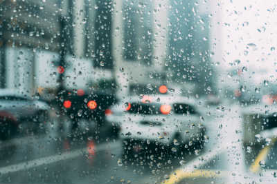

Franklin Breaks Record For Most Rain In 24 Hour Period
The city of Franklin has broken the world record for the most rainfall in a 24 hour period of time. On Tuesday, March 24th, Franklin received 40 inches of rain. Residents were shocked to see it rain so hard all night long. Many residents were forced to evacuate their homes as the excessive rain caused extreme flooding in certain areas. The city is currently trying to recover from the rainfall, but there are millions of dollars of repairs that still need to be done.